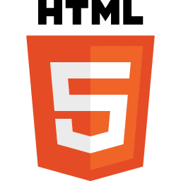

Découvrez mes compétences

Je suis actuellement étudiant à l'Institut Privé Supérieur des Systèmes d'Informationde de Paris en première année de BTS SIO (Services Informatiques aux Organisations) dans l'option SLAM (Solutions Logicielles et Application Métier) qui en gros est une option spécialisée pour le développement. Toujours en cours d'étude, je vous propose, sur ce portfolio, de retrouver les différentes études, et projets professionnels que j'ai pu entreprendre au sein de mon cursus.
Le Brevet de Technicien Supérieur (BTS) Services informatique aux Organisations (SIO) s’adresse à ceux qui souhaitent se former en deux ans (reconnu par l’état de niveau Bac+2) aux métiers d’administrateur réseau ou de développeur pour intégrer directement le marché du travail ou continuer des études dans le domaine de l’informatique. Il associe aux enseignements théoriques et professionnels (en contrôle continu et final) deux stages en entreprise (10 à 11 semaines réparties sur les deux années d’études). Ce BTS propose deux spécialités distinctes : SISR et SLAM.
L'option Solutions Logicielles et Applications Métiers forme des spécialistes des logiciels (rédaction d'un cahier des charges, formulation des besoins et spécifications, développement, intégration au sein de la société).
L'option Solutions d'Infrastructure, Systèmes et Réseaux forme des professionnels des réseaux et équipements informatiques (installation, maintenance, sécurité). En sortant d'un BTS SIO SISR, vous serez capables de gérer et d'administrer le réseau d'une société et d'assurer sa sécurité et sa maintenance.